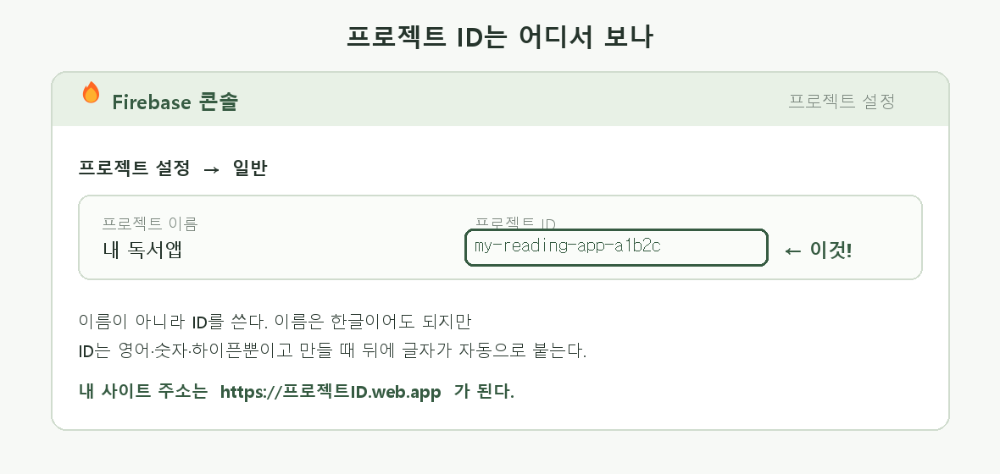
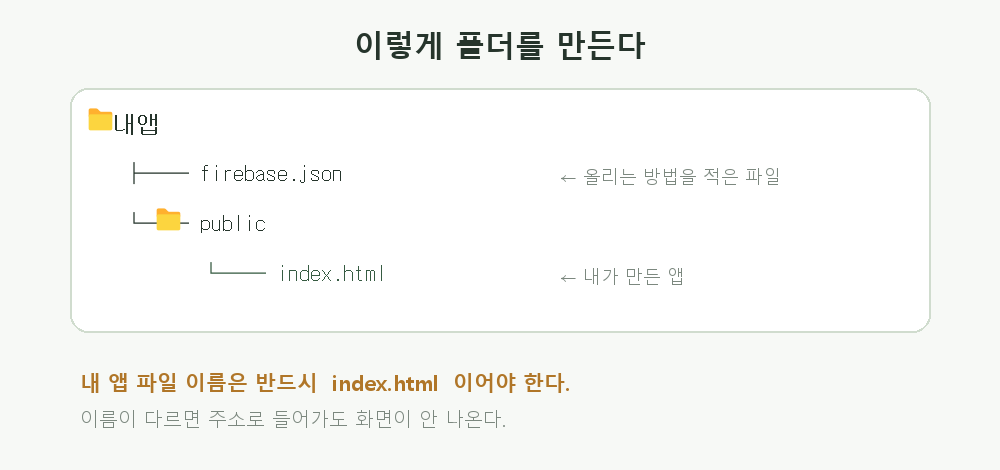
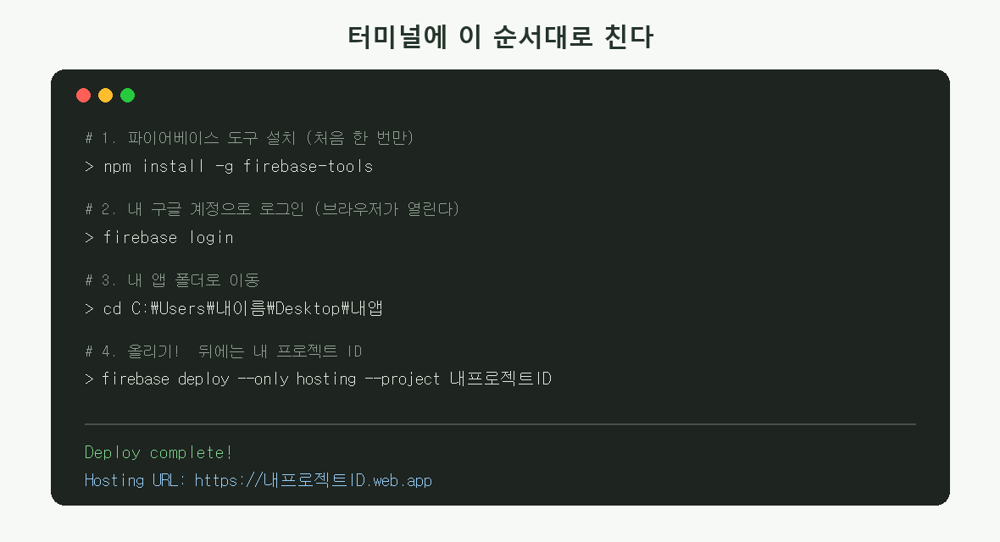

내가 만든 앱을
인터넷에 올리기 🚀
HTML 파일 하나를 진짜 인터넷 주소로 만들어서, 친구 폰에서도 열리게 하는 방법
지금 내가 만든 index.html은 내 컴퓨터 안에만 있다.
친구한테 보여주려면 파일을 카톡으로 보내야 하고, 폰에서는 제대로 안 열린다.
인터넷에 올리면 주소 하나로 누구나 열 수 있다. 그 주소를 NFC 태그에 넣을 수도 있다.

얼마나 걸리나? 처음 한 번은 20분쯤. 두 번째부터는 명령어 한 줄, 10초면 된다.
돈 드나? 안 든다. 무료로 충분하다.
돈 드나? 안 든다. 무료로 충분하다.
1준비물 챙기기
구글 계정
학교 계정이든 개인 계정이든 상관없다. 로그인만 되면 된다.
Node.js 설치
파이어베이스에 올리려면 도구가 하나 필요한데, 그 도구를 설치하려면 Node.js가 먼저 있어야 한다.
- nodejs.org 접속
- LTS라고 적힌 초록 버튼 다운로드 (LTS = 안정된 버전)
- 계속 다음을 눌러 설치. 설정 바꿀 것 없다
설치가 끝나면 열려 있던 터미널은 모두 닫고 새로 열어야 한다.
안 그러면 방금 설치한 걸 컴퓨터가 못 찾는다.
2파이어베이스에 내 자리 만들기
내 앱이 들어갈 자리를 프로젝트라고 한다. 웹에서 만든다.
- console.firebase.google.com 접속 → 구글 로그인
- 프로젝트 만들기
- 이름을 정한다. 한글도 된다 (예: 내 독서앱)
- Google 애널리틱스는 꺼도 된다. 지금은 필요 없다
- 만들어지면 왼쪽 메뉴 빌드 → Hosting → 시작하기를 눌러둔다
프로젝트 ID를 적어두자
이름 말고 ID가 필요하다. 톱니바퀴 프로젝트 설정 → 일반에 있다.

프로젝트 ID는 내가 지은 이름 뒤에 알 수 없는 글자가 자동으로 붙는다
(예:
이게 그대로 내 사이트 주소가 된다 →
my-reading-app-a1b2c). 세상에 하나뿐인 이름이어야 해서 그렇다.이게 그대로 내 사이트 주소가 된다 →
https://프로젝트ID.web.app
3폴더 정리하기
파일을 아무 데나 두면 안 된다. 이렇게 만든다.

- 바탕화면에 폴더를 하나 만든다. 이름은
내앱같은 걸로 (영어면 더 좋다) - 그 안에
public이라는 폴더를 만든다 - 내가 만든 HTML 파일을
public안에 넣고, 이름을index.html로 바꾼다 내앱폴더 안(= public 밖)에firebase.json파일을 만들고 아래 내용을 붙여넣는다
{
"hosting": {
"public": "public",
"ignore": ["**/.*"]
}
}
파일 이름이 제일 많이 틀린다.
•
• 메모장으로 만들면
•
index.html 이어야 한다. Index.html, index.html.txt 는 안 된다• 메모장으로 만들면
.txt가 몰래 붙는다. 탐색기에서
보기 → 파일 확장명을 켜서 진짜 이름을 확인할 것
4터미널에서 올리기
이제 명령어를 친다. 무섭게 생겼지만 4줄이다.
터미널 여는 법 — 내앱 폴더를 연 다음, 주소창에 cmd를 치고 엔터.
그러면 그 폴더에서 바로 시작한다. (또는 시작 메뉴에서 PowerShell 검색)

한 줄씩 따라 하기
# 파이어베이스 도구 설치 (처음 한 번만)
npm install -g firebase-tools
1~2분 걸린다. 노란 글씨가 지나가도 에러가 아니다. 그냥 기다린다.
# 구글 로그인 (브라우저가 저절로 열린다)
firebase login
브라우저에서 아까 그 계정으로 로그인하고 허용을 누른다. 터미널로 돌아오면 끝.
# 올리기! 뒤의 ID는 내 것으로 바꿔야 한다
firebase deploy --only hosting --project 내프로젝트ID
내프로젝트ID 자리에 2단계에서 적어둔 ID를 넣는다.
그냥 두면 당연히 안 된다.
성공하면 이렇게 나온다
+ Deploy complete! Hosting URL: https://내프로젝트ID.web.app
이 주소가 내 앱이다. 폰에서 열어보자. 🎉
올라간 파일 개수를 꼭 보자. 중간에
found 1 files 처럼 나온다.
내가 넣은 파일 수와 같아야 한다. 갑자기 40개쯤 나오면
public 안에 이상한 게 들어간 것이다.
5고쳤을 때 다시 올리기
public/index.html을 고치고, 터미널에서 마지막 명령만 다시 치면 된다.
firebase deploy --only hosting --project 내프로젝트ID
주소는 그대로다. 10초면 바뀐다.
고쳤는데 폰에서 그대로면? 폰이 예전 화면을 기억하고 있는 것이다(캐시).
탭을 완전히 닫았다 다시 열거나, 주소 뒤에
탭을 완전히 닫았다 다시 열거나, 주소 뒤에
?v=2를 붙여서 들어가 보자.
6안 될 때
| 이렇게 뜬다 | 이렇게 하면 된다 |
|---|---|
npm : 용어가 인식되지 않습니다 |
Node.js가 없거나, 설치 후 터미널을 새로 안 열었다. 터미널을 닫고 새로 열자 |
firebase : 용어가 인식되지 않습니다 |
1단계 설치가 안 끝났다. npm install -g firebase-tools 다시 |
Failed to get Firebase project |
프로젝트 ID가 틀렸다. 이름 말고 ID인지 확인 |
Specified public directory 'public' does not exist |
터미널이 엉뚱한 폴더에 있다. cd로 내앱 폴더로 가자 |
| 주소는 열리는데 Page Not Found | 파일 이름이 index.html이 아니거나 public 밖에 있다 |
| 화면은 나오는데 글씨가 다 깨짐 | HTML 맨 위에 <meta charset="UTF-8"> 가 있는지 확인 |
| 이미지가 안 보임 | 이미지 파일도 public 안에 같이 넣어야 한다. 내 컴퓨터 경로
(C:\Users\...)를 쓰면 남의 폰에서는 안 보인다 |
7마지막 확인

기억할 것 세 가지
- 내 컴퓨터 경로는 남에게 안 열린다.
C:\Users\...로 시작하는 주소는 나만 열 수 있다 - 올린 것만 인터넷에 있다. 고치고 다시 올리지 않으면 예전 그대로다
- 파일 개수를 세어보자. 예상보다 많이 올라갔다면 뭔가 잘못된 것이다